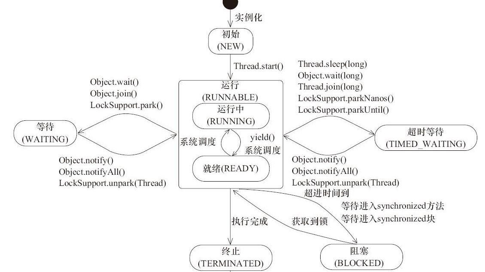
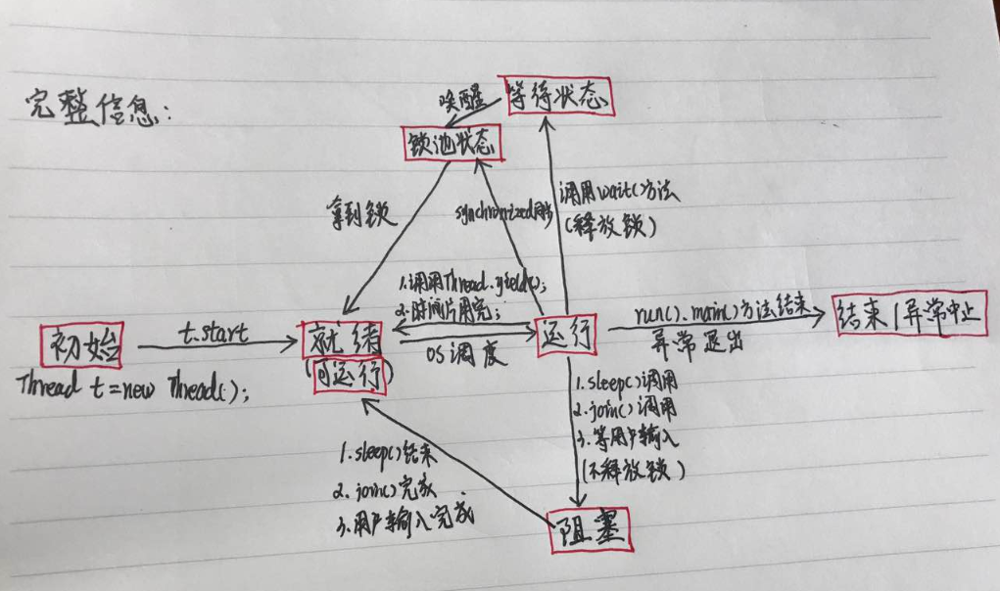

1.为何并发：
为了充分利用cpu资源，允许多个线程同时运行，但是这样，多个线程在针对共享资源运行时可能会导致多线程问题，比如买票问题，就在共享资源的处理上进行了处理，比如加锁，使得多个线程在共享资源处理上，回归到单线程的运行状态，到了使用共享资源的状态时，通过比如锁控制，不允许其他线程抢占运行（切换）。
以tomcat为例，在接收到会话请求时，会给每个请求创建一个线程，而在写的普通java代码中，大部分都是只考虑单线程运行的，没有考虑多个线程同时运行对共享资源的处理（少部分类考虑多线程并进行了处理如StringBuffer），所以，在多个线程同时运行时（例如多个用户登录操作），可能就会引发多线程问题。
2.java与多线程
如上，java代码在处理多个请求会话同时进行的时候，才会体现出处理并发问题的必要性。但是一个人的时候并不能方便的模仿出多线程的效果。为此，java提供了处理多线程和实现多线程的相关类。
2.5线程状态


需要注意的是,线程只能从就绪状态进入到运行状态。
(1)sleep()和wait()的区别
sleep()是Thread类的方法，wait()是Object类的方法
sleep()方法导致了程序暂停执行指定的时间，让出cpu该其他线程，但是他的监控状态依然保持者，当指定的时间到了又会自动恢复运行状态。在调用sleep()方法的过程中，线程不会释放对象锁。
而当调用wait()方法的时候，线程会放弃对象锁，进入等待此对象的等待锁定池，只有针对此对象调用Object的notify()方法后本线程才进入对象锁定池准备获取对象锁进入运行状态。因此先等待，然后再获取锁
(2)join()与yield
join()方法的作用是调用线程等待该线程完成后,才能继续用下运行；
public static void main(String[] args) throws InterruptedException
{
System.out.println("main start")
Thread t1 = new Thread(new Worker("thread-1"));
t1.start();
t1.join();
System.out.println("main end");
}
在上面的例子中，main线程要等到t1线程运行结束后，才会输出“main end”。如果不加t1.join(),main线程和t1线程是并行的。而加上t1.join(),程序就变成是顺序执行了。
使当前线程从执行状态（运行状态）变为可执行态（就绪状态），用了yield方法之后，该线程就会把CPU时间让掉，让其他或者自己的线程执行，注意让掉是回归到可运行（就绪状态）。
3.多线程的实现方式：实现runnable接口、继承Thread类、使用执行器Executor 、实现Callable接口，
(1).继承Thread类，覆写run方法，然后执行new Thread().start();方法：
start方法去调用native方法start0，然后由jvm负责调用实现Runnable接口的实现类的run方法（多态），也就调用了继承Thread的类的run方法
(2).实现runnable接口的类并不具备线程功能，它还需要作为Thread类的构造函数参数随着Thread类一起实例化才可以，然后在执行
new Thread().start(); 实现Runnable不具备返回值
(3) 实现Callable接口，类似于Runable接口，区别是有返回值
所以二者本质上，都是jvm调用了Runnable接口实现类（或实现类的子类）的run方法，继承Thread类是Runnable的子类，实现Runnable的类也是Runnable的实现类，有疑惑为什么实现Runnable接口之后还一定要放在经过Thread类呢，直接run为什么不行呢，因为Thread类的start方法调用的native方法start0才真正使得类具有了多线程特性。
并发模仿火车票售票案例（未解决并发带来的问题）：
a.继承Thread类的方式
package demo;
class Ticket{
//因为静态，类只初始化一次，所以每个类共享一份
private static int a = 100;
// private static Integer a = 100;
void sell() {
while (a>0){
try {
Thread.sleep(10);
} catch (InterruptedException e) {
System.out.println(" 捕获异常 ");
}
System.out.println(a);
a --;
}
}
}
public class MoreThreadTest extends Thread{
static {
System.out.println(" 静态 ----");
}
Ticket ticket = new Ticket();
@Override
public void run(){
ticket.sell();
}
public static void main(String[] args) {
MoreThreadTest more1 = new MoreThreadTest();
more1.start();
MoreThreadTest more2 = new MoreThreadTest();
more2.start();
MoreThreadTest more3 = new MoreThreadTest();
more3.start();
}
}
b.实现Runnable的方式
package demo;
class Ticket{
//此处不要加static ， 因为Run类只创建一次，被重复使用了两次
double a = 100d;
void sell() {
while (a>0d){
try {
Thread.sleep(10);
} catch (InterruptedException e) {
System.out.println(" 捕获异常 ");
}
System.out.println(a+" "+Thread.currentThread());
a --;
}
// while (true){
// if(a>0) {
// try {
// Thread.sleep(10);
// } catch (InterruptedException e) {
// System.out.println(" 捕获异常 ");
// }
// System.out.println(a);
// a --;
// }
// }
}
}
class Run implements Runnable{
Ticket ticket = new Ticket();
@Override
public void run() {
ticket.sell();
}
}
public class MoreThreadTest2{
public static void main(String[] args) {
Run run = new Run();
Thread t1 = new Thread(run);
Thread t2 = new Thread(run);
t1.start();
t2.start();
}
}